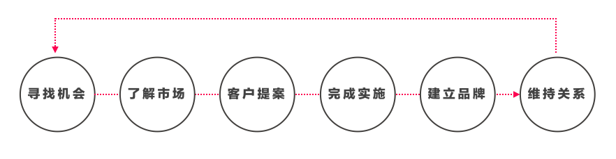
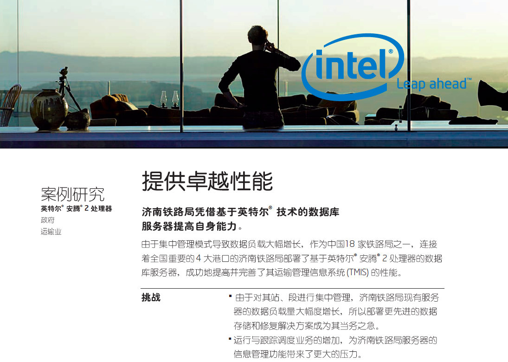
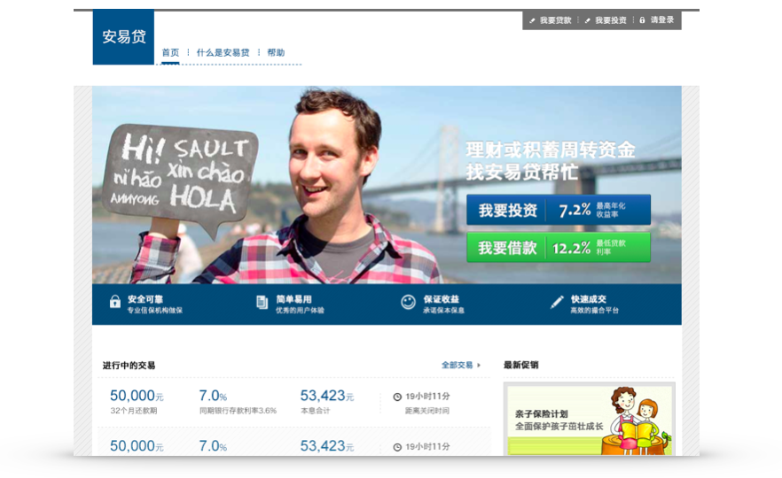
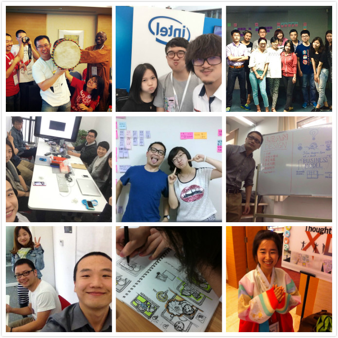
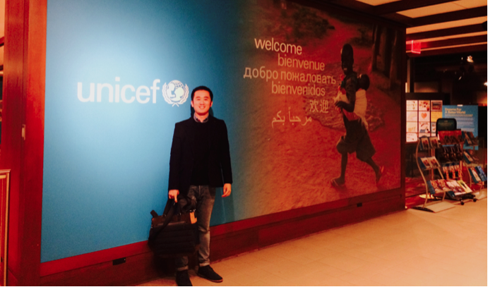
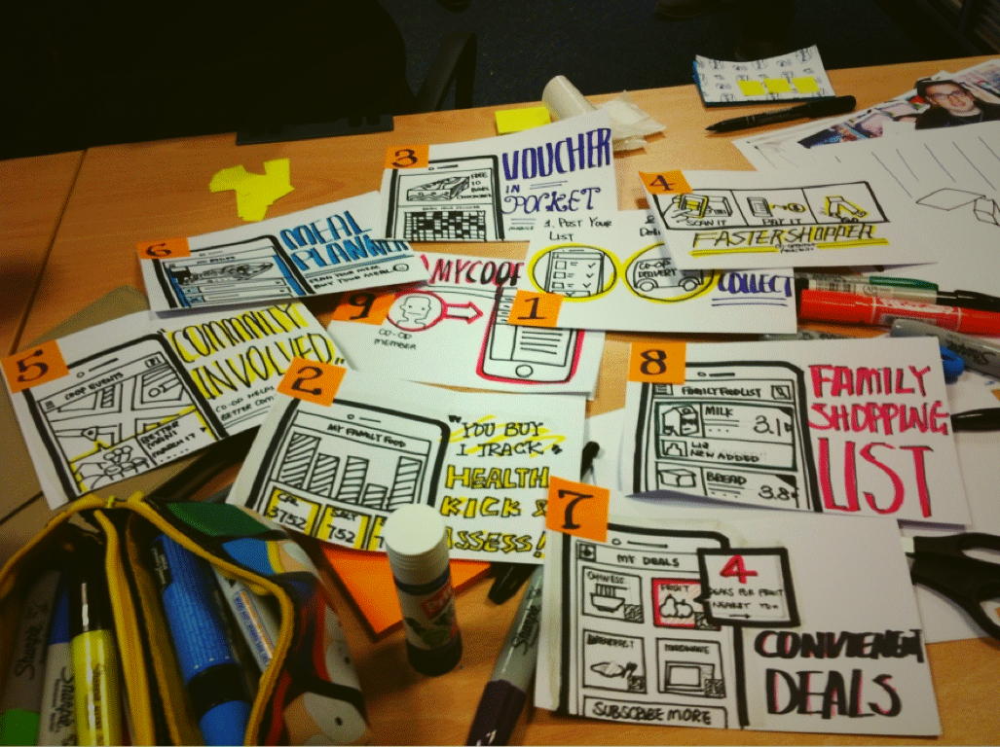

（特赞访问稿）
采访（Q）=小王子mayday
达人（A）= 熊子川
Q：您认为学生时代，您就读的哪所学校对您影响最大？
也许和这个系列很多设计师不同，我并没有接受过正统的设计教育，本科是学计算机的，10年前国内并没有太多的设计教育，所以其实学校对我的影响并没有特别大。
我在与设计不期而遇的旅途上，更多的是自我驱动。我属于工作之前处于比较迷糊状态，工作后突然开窍的。一直以来，设计对我来讲，不是一种理想、也不是一种生活方式或态度，而是一种专业服务，是一个端到端的完整服务，而不是一个点上的，是贯串“寻找机会 - 了解市场 - 客户提案 - 完成实施 - 建立品牌 - 维持关系”全流程的，因此我从一开始有意识培养的是我完成设计这项专业服务的能力，而不简单只是设计本身。

因此回到你这个问题上，坦白说，学校教育并没有给我太大的影响，那是我是一个不爱说话，很简单普通的孩子。这也是我为什么想未来回归到教育里的一个初衷，学校教育对我来说，是一个缺憾，所以我一直想回到学校去从事设计教育的工作。
（上图是10年前去英国留学的照片）
Q：学生年代，令您印象最深的一个参与的设计项目？
我来讲讲我第一份实习工作吧，第一份实习是在一家荷兰的出版公司完成的，那时候的工作是帮他们做一个编辑、投稿者、翻译者之间互动的一个小平台，我之前有做Freelancer的经验，我了解客户是不是愿意最后给你付款更多的是取决于过程中的服务体验，于是这个项目上我做的最多的事情还是沟通。
每周我都会与客户几次沟通，每周都有一次小小的演示，晚上的时候会和他们吃饭聊天，最后我收到了做Freelancer历史以来最大的一笔款10000元，还拿到了实习结束之后的一年维护合同。
这次实习经历真正让我理解一次优秀的专业服务过程不但让你的项目更加成功、更多收益、也会让你获得更多的机会，这个经历确实对我以后的职业生涯有了不小的影响。
Q：毕业以后的第一份工作是什么，为什么？
毕业后的第一份工作是在Intel做一名普通的实验室管理员，当时因为接私活可以挣到不错的收入，对于职业上我并没有想那么多，第一次发出简历到网上就有人回复，还是大名鼎鼎的Intel，接受面试后很容易就通过了。
我的工作就是在实验室里把培训前的机器准备好，从海外回来，在一间实验室里做管理员，听起来好像有点奇怪，但我那时候觉得，一切都是缘分，我有大的理想和抱负，就这样随遇而安吧。
在实验室工作时，我会想怎么让实验室更好，当时实验室课表的设计很难看，学员们不知道该选哪门课，所以我重新设计了课表，用颜色、图例等告诉学生该选哪门课。后来这个课表发展成一个小册子，类似技能树，简单明了的告诉学生要达到哪个技能需要学习哪些课程，这个小册子流传到总部那里，市场部的人看了，觉得比他们的外包方做得还好，于是就给了我很多设计的活，例如宣传册、海报、Flash等，你看很多设计师最开始都是从做这些最简单的工作开始的。
 （最基础的设计工作，就是帮助公司设计案例小册子）
而在这个过程中，我会把我以前把设计当成专业服务的一套用上，我会思考海报给谁看，会先出个草图，想好文案，与相关人沟通，在这个过程中打上自己做事风格烙印。这些工作我都完成得不错，真正收获的其实不是你的作品集，而是你完成作品的过程。
Q：之后你加入了现在的公司一待就是快8年，为什么？
有一天我在Intel的实验室里搬机器，接到了一个电话，是ThoughtWorks打来的，我当时Intel的合同就要到期了，我需要再去找工作，于是欣然接受去这家公司面试。刚去的时候其实就是觉得开放办公环境、有很多外国人、大家都看起来轻松友好，经过了8轮漫长的面试，我终于获得了职位，那时候也没有设计师这个岗位，因为我英文没问题，于是就做了业务分析师。
现在想起来，我觉得加入一间公司最重要的是两点：入对行和跟对人。
当时ThoughtWorks刚进入中国两年，处于成长期，到现在已经快10年，每年保持30%左右的增长，这个增长有赖于中国互联网和IT市场的爆炸式增长，这样的增长实际在拖着你成长。
另外是领导者的成长，当时领导我们的中国区总经理是一位特别强、低调、又努力学习的人，土生土长的中国人，现在已经是我们的CEO了，要知道这是一家全球3000多人的纯美资企业，这在美国基本是很难想象的。这样的影响一直影响着我，我觉得一个“对”的领导者有两方面：正气和学习能力，我始终认为影响一辈子走势的一定是“正气”，或者说正能量；学习能力，促使他不断变更好。所以现在我招人，我会说“跟着我，一定会变更好，因为我们会不断变更好”。
所以在过去的快8年时间里，真正让我留在这里的，其实是公司的成长和领导者的成长，当然，当我有自己的团队的时候，另一个让我满足的是最新的一代年轻设计师的潜力，他们会变成什么样子，我特别好奇和满心期待看到未来10年的样子。
Q：职业生涯刚开始时候，令您印象最深的一个参与的设计项目是什么？
令我印象最深的是，08年新加坡的一个项目，当时是为新加坡最大电讯公司做一个线上订购电视节目的系统，从配置节目到最后下单的全流程。
当时项目中需要用户测试，而08年其实业界其实很少人谈用户测试这个概念，而自己本身对测试没有很多意识。当时没有这么多原型工具，我花了3天时间，用PPT作了80-100页的线框图。然后请了8个用户来测试，但8个人几乎对我所有设计点都不知道。我感到很沮丧，做了这么多，结果却是这样。
而我导师是一个幽默的英国人，他当时对我说，“什么时候你真正享受用户对你设计的批判（原话是Raping强暴），你才真正是一个为用户设计的设计师”。
我在那个时候突然明白，其实大部分的设计师都是为自己设计，为理想、为情怀、为自己的一点小聪明，而实时上设计不是不变的，它在不断衍变，因为用户在变、市场也在变；而不是一个人坐在那里想怎么打磨设计，要走出来；设计也不是一次成型的，它是一个沟通过程，要学会如何与相关人一起打磨，在打磨过程中潜移默化地植入你的想法。

（2010年第一个自己主导设计的金融产品，现在已经成为中国最大的金融市场之一）
总的来讲，这个项目让我真正明白了设计依然是一项服务，要尊重设计过程，在设计过程中要保持谦逊、提升沟通能力，学会与客户沟通，了解客户要什么，并设计来满足客户需求。
Q：您后来遇到过的最大困境是什么？如何解决的？
找不到自己的方向，不知道该干什么；ThoughtWorks依然是一家技术公司，又特别自由的公司，到一定时候时因为你成长很快，你很快就遇到了瓶颈，每天的事情类似，没有太多挑战。
所以大概在2010到2011年期间，我特别沮丧，不知道要干什么，后来我的领导者对我说：“迷惘是因为你离目标太近”。后来我才明白，一直低头的时候，自然看到脚下的一滩烂泥，偶尔抬头看看，看到对岸，你自然就豁然开朗了。
当时我看到的大势头，是未来客户一定会觉得传统的设计外包有问题，未来的方向一定是设计和技术的结合，大家也可以看到现在的变化，这个趋势确实出现了，于是那时候就笃定要做设计业务，于是很快就从泥沼中抽身出来，开始不断写自己的设计博客、做讲演、交朋友、做品牌，从零开始，到现在已经有了一支35人的设计团队。

(从没有设计开始，到一支成熟和逐渐成长的设计团队)
回头想想，迷茫的时候是因为近视、看不到大势头，而跟对人的好处是他们比你看的多、看得远，他们可以帮助你看到这个势头；而加入一家高速增长公司的好处是，机会比人多。因此，我还要重复一次，加入一个高速成长的组织，跟随一个你愿意追随的领导者，你会发现这些今天你觉得趟不过的困难，都是玩笑。
Q：如何可以让迷惘的自己看清远方的岸呢？
选一个好领导当然是最捷径的办法，除此之外，还有两点：
第一，学习，学习再学习，不学习看什么远方，天天抱着别人吐出来的所谓干货看什么远方，学习是看到远方的基础，比如阅读习惯、写作习惯，不然抬起头来看到也还是一团迷雾。比如说，我从2010年开始一直坚持写博客，我觉得写博客是最好的学习手段，到现在哪怕我在美国也有人告诉我在阅读《一只土贼》的设计博客，这是一举多得的事情，既获得了知识和积累、又收获了设计师品牌。
第二，了解厉害的人，真正的了解是来自于合作和接触，你说我喜欢原研哉，你接触不到意义不大，仔细观察你觉得厉害的人，亲身接触他们，向他们学习、和他们交朋友，直到有一天你不觉得他们厉害了，你自然就在岸上了。
 （在联合国教科文组织主导设计项目）
Q：有小伙伴想了解设计思维方面内容，我在您之前的《为什么反对设计思维》中看到这样一个观点“方法只是方法，懂得方法的来龙去脉，了解方法使用的上下文，并学会审时度势才是真正的设计思维”，想了解从方法论到执行中你有没有遇到一些问题，如何解决的？
A：对于设计师而言，作品是因、设计逻辑是果，不要搞反了，我希望所有设计师都能思考一下自己的设计逻辑是什么。而设计思维就是其中一个帮助你产生设计逻辑的工具而已，我之所以反对，不是反对设计思维，而是反对大家要么把它当成万能药、要么全面否定。
设计思维是指南针，而不是地图，因为每次进入的森林都不一样，你若把它当成解决所有问题的根本，我是反对的，所以我反对过度拔高设计思维的地位，现在有些宣传把它描述成创新的银弹，这是不负责任的。
真正需要形成的是你的设计逻辑，比如对我来说，我的设计逻辑就是设计思维的漏斗模型——“上下文、关联和启发、实质的东西”，所什么可能都是这样套路。
例如设计一个设计工作坊，从上下文收集、用户画像、体验地图、设计挑战、创意、原型、测试一整套下来，就是遵循这种设计逻辑。
 （大量视觉化的设计工作坊成了我工作的全部）
做客户也是一样，先不着急销售服务，而是尽可能地了解上下文，让客户自己找到一些潜在关联点、最后再形成服务内容进行销售。
万变不离其宗，这就是真正的方法论，它是融入到你任何一件事情中的。
Q：对我来讲，经常面临项目多、时间紧的情况，总觉得设计沉淀这块做的不好，所以想了解您是否遇到这样情况，是怎么做设计沉淀来提升设计专业能力？
A: 你要提高“知识转化率”。一般来讲，学习成长快的人分为两种：靠绝对时间和知识转化率。前面一种需要长期的时间和坚持，如果二者结合当然最好不过，如果时间不够，提高知识转化率就是最好的办法。
知识转化率就是你把知识变成自己的知识的转化效率，越短的时间里转化越多，效率就越高，对我来说有这么五步，当你学到一个知识、或者一个启发的时候：
- 用碎片化的方式说出来，例如朋友圈、微博；
- 用一篇文章或者笔记串联这些碎片化的点；
- 讲给别人听；
- 讲演、尤其是公开讲演；
- 不断做研究，甚至把它做出一次培训。
把这5步都做了，你不仅掌握了这个知识点，还增加许多其他知识补充，很短时间内你就能学到很多，也更有驱动力。
当然你还面临一个没有时间的问题，其实真没什么诀窍，没时间挤时间，随手拍随手记，利用碎片时间，记笔记是一个很好的习惯。
Q：最后结合您的经历，从心中设计师的未来职业方向，您会给年轻设计师怎样的建议?
之前提到了很多，一共是四条建议，这也是组成我职业习惯的基础，：
- 把设计当成专业服务完成，放下你的玻璃心、少谈些主义、少谈些情怀；
- 拥抱市场和客户，到客户那里去，深刻了解市场；
- 跟随大势，加入一个成长型的组织；
- 学习学习再学习，烦恼的大部分根源都来自于“想得太多、读书太少”。
除此之外，我觉得设计之外的东西还非常多，我在8个国家都工作过一段时间，每到一个地方，都觉得其实还有许多有趣的东西值得我们探究，设计只是很少的一部分，作为设计师，应该对这个世界充满好奇。
最后，对于年轻设计师，别被这个市场给忽悠了，别被那些数字、资本、头衔、情怀、颠覆者、舒服的办公环境、财务自由忽悠了，踏踏实实用好辅助线，把东西对齐，再加一点大志向，在这样一个高速成长的市场，心怀野心、随遇而安，没问题的。